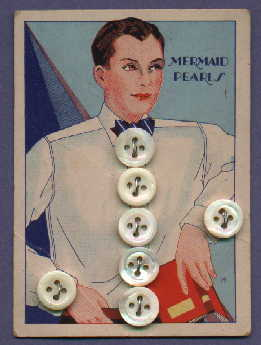

Wednesday, November the 24th, 2004
back to: title, date or indexes
The nights are drawing in and soon winter will be upon us. Remember the long-ago days when people made their own entertainment? Ho what fun was to be had! Here are two completely genuine items from Frederica Seeger's Entertainments For Home, Church & School (1910). Still thy beating heart!
BUTTON, BUTTON The players sit around the room in a circle. The leader then holds a button between his hands, with the palms pressed together, so as to hide it. He goes around the circle, passing his hand between those of the players. As he does this, he says: “Hold fast to what I give you.” He is careful not to let the players see into whose hands he passed the button. The circuit having been made, the leader says to the first player: “Button, button, who has the button?” The one questioned must answer, naming some one whom he thinks has it. So it continues until all have had a turn at answering the same question. Then the leader says: “Button, button, rise!” The button holder must do this.

Some buttons
PROGRESSIVE PUZZLES Provide as many small, square cards as there are guests; also several pairs of scissors. The party seats itself in a circle. The cards and scissors are given out. Then each player cuts his card twice across, so as to make four pieces. The straight cuts must intersect each other. After the first cut, the pieces must be held together until the second cut has been made. A player mixes his pieces and passes them to his right-hand neighbor. When the leader gives the signal, all the players put together the four pieces they have. The one who first succeeds calls out “ready.” Then all stop and pass the cards on again. The successful player is given a mark on a tally card. The game goes on until a half hour has passed. The person receiving the most marks is entitled to a prize, or may become the leader, as preferred.
Hooting Yard on the Air, November the 24th, 2004 : “JFK : The Unanswered Questions” (starts around 08:19)